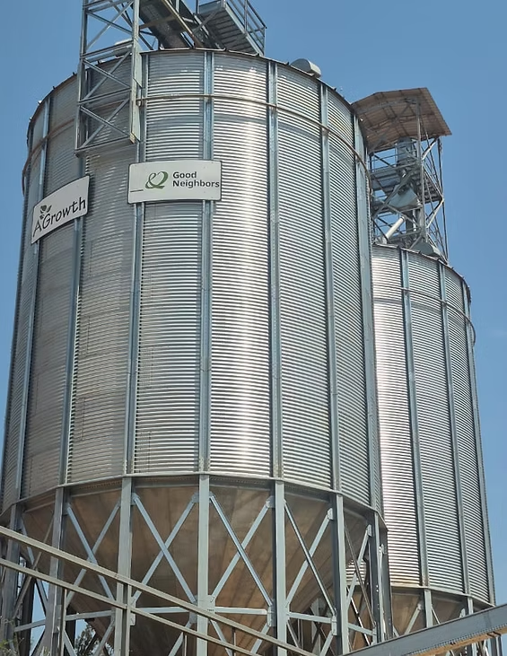
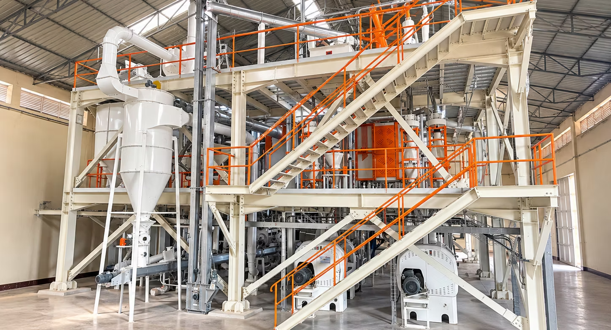

AGrowth · Sep 16, 2026 · 1 min read
AGrowth · Sep 16, 2026 · 1 min readAGrowth Hosts EAX EAGC Workshop Participants for Maize Milling Factory Visit
AGrowth Ltd welcomed participants from the Safe Grain Handling, Whole Grain Milling and Fortification Training Workshop for a factory visit on September 13, 2026, at its Kigali maize flour production facility.

The workshop was jointly organized by the East Africa Exchange (EAX) and the Eastern Africa Grain Council (EAGC). The visit offered practical exposure to maize storage and milling operations.

Participants observed how maize is stored before processing and followed the milling system as grain moves through key machinery to become flour.

The factory tour supported knowledge exchange among grain-sector professionals and connected workshop learning with day-to-day operations.
AGrowth was pleased to host the delegation and contribute to practical learning across the regional grain sector.
← Back to Inside AGrowth